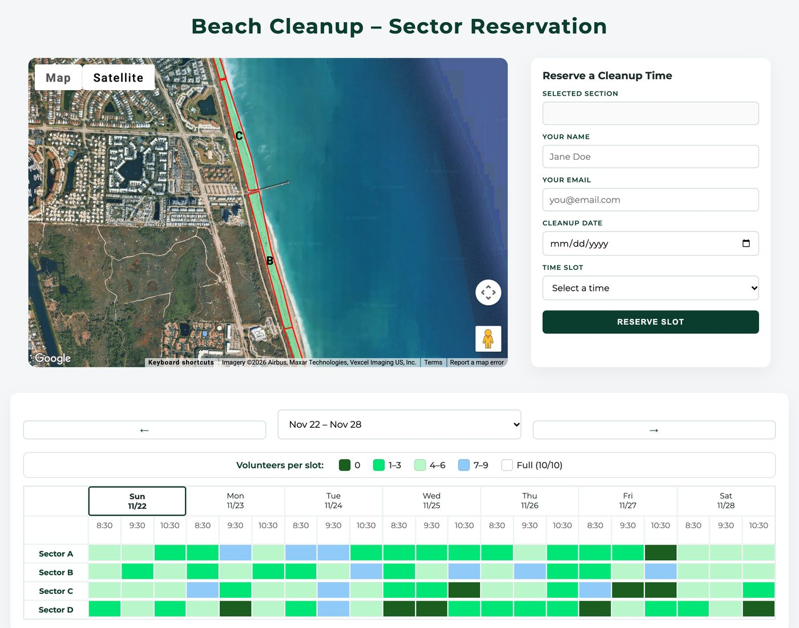
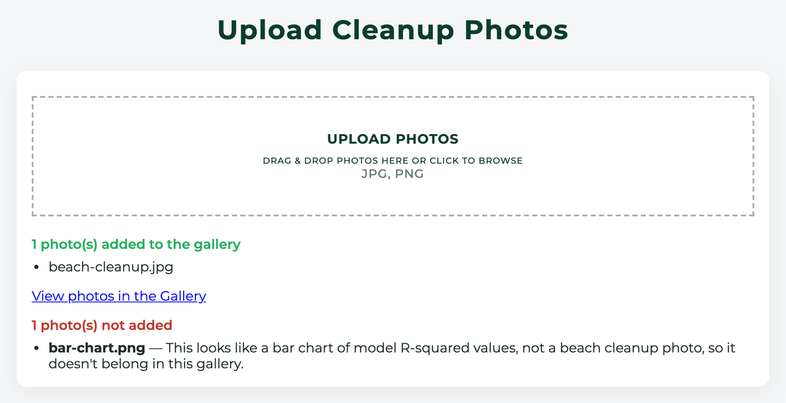
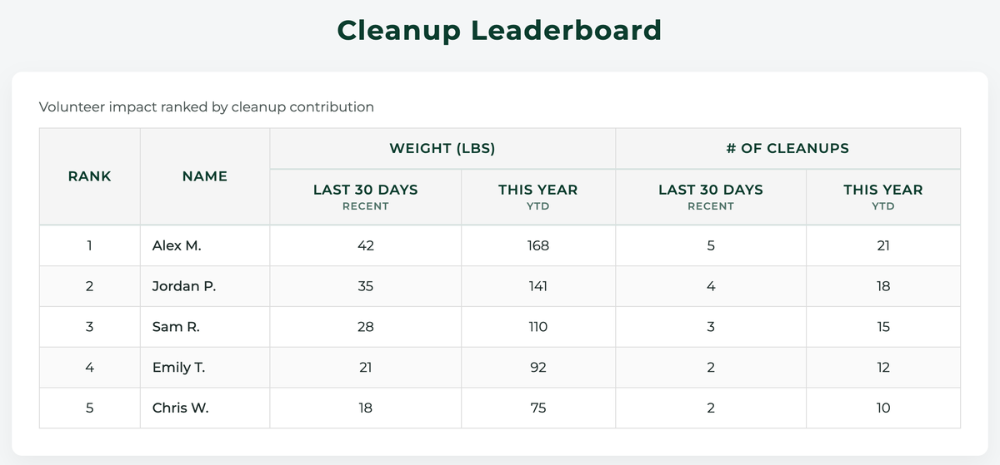
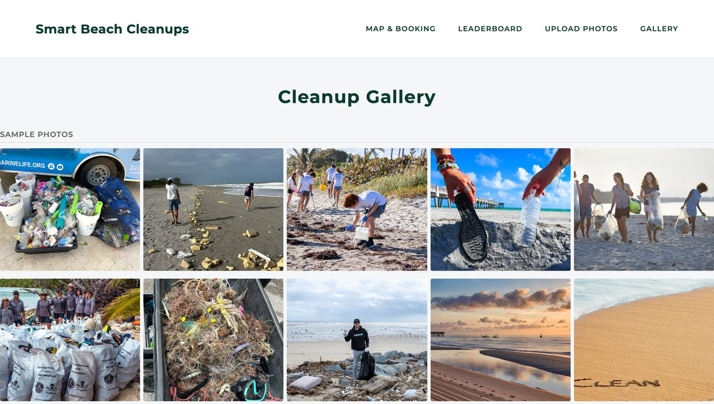

Built for Loggerhead Marinelife Center, Juno Beach
Smart Beach Cleanups
Volunteers at beach cleanups tend to bunch up near the entrance, so most of the beach never gets cleaned. I built a web app where volunteers pick a beach sector and time slot on a map before they arrive, so cleanups cover the whole shoreline. Volunteers can upload photos of what they collected, and an AI model automatically rejects photos that aren't from a cleanup.
- Runs on two AWS servers behind a load balancer, so the site stays up if one fails
- Nightly database backups, health monitoring, and email alerts
- Each organization's data is kept separate, so the same app can serve other groups
Status: in development with Loggerhead, and being shown to other Florida beach cleanup groups.
Try the demo
Access code: BeachPreview


The booking page: pick a sector on the map, then a time slot. The grid shows how full each slot is. Sample data from the public preview. Click any image to enlarge.


PythonFlaskPostgreSQLAWS (EC2, S3, load balancer)nginxGoogle Maps APIAnthropic APIJavaScript



